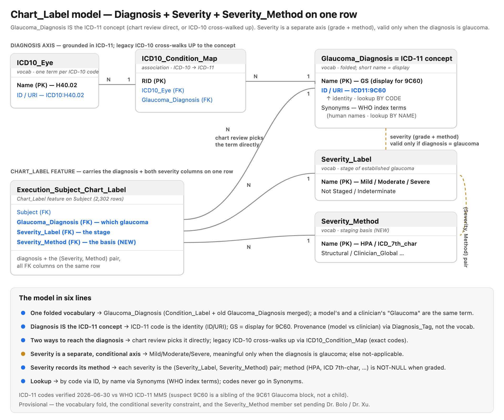

Diagnosis & Severity Vocabularies — Clinical Data Dictionary
- Status: structure agreed / finalized — the two-axis model and vocabulary membership are settled by Dr. Xu, Dr. Bolo & Carl (email thread, 2026-07-01); clinical thresholds & criteria remain provisional, to be finalized with Dr. Bolo and Dr. Xu
- Date: 2026-07-01 (structure finalized; supersedes the 2026-06-30 strawman)
- Catalog:
www.eye-ai.org, catalogeye-ai, schemaeye-ai - Scope: clinical reference and design proposal only — this document does not modify the catalog (see Appendix C)
Provisional notice. The structure — the two-axis model, the vocabulary membership, and the settled decisions in §1 — is agreed by the team (email thread, 2026-07-01). What remains provisional are the clinical criteria and thresholds: each clinical definition, criterion, and threshold below is a placeholder written to be argued with, not a settled standard, until reviewed and ratified by Dr. Bolo and Dr. Xu. Where a definition is unknown, it is marked TBD — clinical.
How to read this document. The body is the narrative: §1 what we're doing, §2 why (the limits of the current vocabularies), §3 the proposed design, §4 the change plan, §5 the open clinical questions. The reference material — the current catalog contents and the proposed vocabulary tables in full — lives in the appendices:
- Appendix A — current-state inventory (every term, verbatim from the catalog) + how the terms are used today.
- Appendix B — the proposed vocabulary tables in full (
Glaucoma_Diagnosis,Severity_Label,Severity_Method). - Appendix C — references / provenance / process.
1. Summary — what we are doing
This document defines the diagnosis and severity vocabularies used to label glaucoma in the Eye-AI catalog, and proposes a cleanup. In one screen:
- Diagnosis and severity are two separate axes. Diagnosis = which glaucoma,
or none. Severity = stage of established disease (
Mild/Moderate/Severe), applicable only when the diagnosis is a confirmed glaucoma subtype — "mild glaucoma" = a glaucoma diagnosis + aMildseverity, not one fused term (§3.1). Both axes always carry a value — no nulls: every subject/observation has aGlaucoma_Diagnosis(Dr. Bolo), and severity always has a value — non-glaucoma →Not Applicable, glaucoma-with-unknown-stage →Unspecified(settled — Carl, Dr. Bolo & Dr. Xu).Not Applicable(no glaucoma → no severity exists) andUnspecified(glaucoma, severity exists but unknown) are distinct values — do not conflate them (§3.1). - One shared diagnosis vocabulary, ICD-grounded. Fold today's two overlapping
diagnosis vocabularies (
Condition_Label+ the image/visit/subjectGlaucoma_Diagnosis) into one vocabulary namedGlaucoma_Diagnosis, so a model's "Glaucoma" and a clinician's "Glaucoma" are the same term (direct model-vs-clinical comparison). It carries the ICD-11 glaucoma subtypes (POAG,PACG,Unspecified Glaucoma) plusNon-GlaucomaandGlaucoma Suspect, and every subject/observation must have a value (no nulls on this axis). Each glaucoma term is an ICD-11 concept (GS= Glaucoma Suspect =9C60,POAG=9C61.0,PACG=9C61.1,Unspecified=9C61.Z) with the WHO URI as its identity;Non-Glaucomahas no ICD code — it is a local EyeAI term (Dr. Xu). Legacy ICD-10 codes move out ofSynonymsinto a cross-walk table (§3.2–§3.4). Naming is reconciled to avoid duplicates —Glaucoma Suspectis the existingGSterm (9C60), andNon-Glaucomareconciles the earlierNormalconcept into one term. AddingNon-Glaucoma+Glaucoma Suspectcompletes the spectrum so every dataset maps (Dr. Xu). Full table: Appendix B.1. - Three axes separated. Diagnosis (
Glaucoma_Diagnosis), gradability (Ungradable— could the image be assessed?), and status (Diagnosis_Status— review state) are distinct questions and get distinct homes (§3.3). Severity_Labelcleaned up. Retire the values that are really conditions (GS,Normal or No dx); keepMild/Moderate/Severeas method-agnostic bands (the clinical criteria live with the method, not the grade — §3.5), and split the oldUnspecified/Indeterminatecatch-all intoIndeterminate(glaucoma, staging attempted but inconclusive) andUnspecified(glaucoma, severity exists but unknown). Severity applies only to confirmed glaucoma; non-glaucoma cases takeNot Applicable, so severity is never null (settled — §3.1). Final value set:Mild,Moderate,Severe,Indeterminate,Unspecified,Not Applicable. Full table: Appendix B.2.- Severity records its method of determination. The grade stays
Mild/Moderate/Severe; a parallelSeverity_Methodvocabulary records the staging basis — clinician assessment (CMS criteria), visual-field mean deviation (HPA criteria), administrative coding (ICD), algorithmic, a combination of these, or unspecified — so each severity is the pair(Severity_Label, Severity_Method)(§3.6). The basis may alternatively be captured by the producing workflow, and the set can be expanded over time. Full table: Appendix B.3. - The hard-coded mapping goes away. With the ICD-10 cross-walk in the catalog,
the
icd_mappingdict ineye-ai-ml'scompute_condition_label()becomes a join; only the multi-code priority tie-break stays in code (§3.4). - Nothing here changes the catalog. All changes go through
data-curation; the executable plan (six changes, ordering, open questions) is §4. Clinical definitions are provisional pending Dr. Bolo and Dr. Xu.
Where this sits in the project
The eye-ai-platform repository is the project's front door. Per its layering:
schema/vocabulary changes are executed in data-curation (via its
"Feature Registration Request" template); the eye-ai-ml library reads and
writes these vocabularies (compute_condition_label() /
insert_condition_label()); this document is the clinical reference for what
the terms mean — it informs the data-curation requests, it does not perform them.
A guiding principle throughout: define terms clinically, not by how the label was produced. A term's definition describes the eye, never the mechanism. The same term is written by a human chart reviewer and by an automated ICD rule, and must mean the same thing both ways — so "Moderate POAG" is one clinical concept regardless of who or what produced it.
Note — two senses of "severity." This document concerns
Severity_Label(the clinical stage of disease). It is unrelated toEyeAI.severity_analysis()ineye-ai-ml, which computes which eye is worse (laterality) from RNFL/HVF/CDR and flagsSeverity_Mismatch. Never conflate the two.
2. Why — limitations of the current state
The cleanup is driven by concrete problems in today's vocabularies, grounded in the actual catalog data (full inventory and usage counts in Appendix A):
-
Two overlapping diagnosis vocabularies.
Condition_Label(fine chart-review subtypes) andGlaucoma_Diagnosis(coarse No/Suspected/Unknown, used at image/visit/subject levels) both describe glaucoma status and overlap at the subject level. A model's label and a clinician's label live in different vocabularies, so comparing them requires a cross-vocabulary mapping instead of a value comparison — the cost lands on the platform's central query. -
ICD codes are mis-stored in
Synonyms. TheSynonymsfield ofGS,POAG,PACGholds ICD-10 code patterns (H40.*), not human-readable names — a machine lookup key masquerading as alternate names, and the key thatcompute_condition_label()'s hard-codedicd_mappingreverses. The terms have no proper external identifier. -
Severity_Labelcontains values that are really conditions, not stages.GSandNormal or No dxduplicateCondition_Labelmembers; the data proves it (698GS/GSrows, 27Normal/Normalrows where severity just echoes the condition). True severity only meaningfully applies to established glaucoma — grading a "suspect" or "normal" eye on a Mild/Moderate/Severe scale is a category error. -
Unspecified/Indeterminatepacks two ideas into one label ("indeterminate stage" vs "stage not recorded") via a slash, and is the dumping ground for any condition with no graded stage (≈900 rows). -
Severity descriptions are circular and carry no criteria. "Mild stage", "Moderate stage", "Severe stage" restate the name — nothing a grader could apply reproducibly, and no record of which staging system produced a grade.
-
Normal or No dxfuses two opposite states. "Normal" (assessed, healthy) and "No diagnosis" (no determination made) are opposites in information content, welded into one term — you cannot tell screened-healthy from never-screened.
3. Proposed design
Provisional strawman to be confirmed/revised with Dr. Bolo and Dr. Xu.
3.1 Two axes: diagnosis and severity, separate but conditional
- Diagnosis = which glaucoma, or none —
POAG,PACG,Unspecified Glaucoma,Glaucoma Suspect(GS),Non-Glaucoma,Other,No Diagnosis(every subject/observation has a value — no nulls). - Severity = stage of established glaucomatous disease —
Mild/Moderate/Severe— applicable only when a glaucomatous condition is present.
Severity is a further attribute of an established glaucoma diagnosis, not an
independent label: you first have a diagnosis; severity refines it only when
that diagnosis is a confirmed glaucoma subtype (POAG/PACG, and
Unspecified Glaucoma). This answers Professor Carl's question — is there
such a thing as "mild glaucoma"? — with separate but conditional: "mild
glaucoma" = diagnosis POAG (or PACG) + severity Mild; severity is not baked
into the diagnosis term. It follows that a suspect (Glaucoma Suspect/GS) and a
Non-Glaucoma eye have no clinical stage — they take the severity value
Not Applicable.
Settled decision — no nulls, use Not Applicable (Carl, Dr. Bolo & Dr. Xu).
Severity always carries a value — never null. The values split into three kinds:
- Real stages —
Mild/Moderate/Severe(plusIndeterminatewhen staging was attempted but came back inconclusive): confirmed glaucoma only. Unspecified(severity unknown) — glaucoma present, stage not yet determined. The eye has a severity; it simply has not been established. Per Carl (Slack): "if you have glaucoma you have a severity, you just don't know it." Glaucoma cases only.Not Applicable— non-glaucoma. There is no glaucoma, so no severity exists to assign; severity does not apply. Used for every non-glaucoma diagnosis (Non-Glaucoma,Glaucoma Suspect,Other,No Diagnosis).
⚠️
Not ApplicableandUnspecifiedare DIFFERENT values with different meanings — do not conflate them.Not Applicable= no glaucoma, so no severity exists.Unspecified= glaucoma present, a severity exists but is unknown. (Carl confirmed the distinction on Slack — "Yep".)
This replaces the earlier "null vs sentinel" question — the team chose the
Not Applicable sentinel over allowing NULL, so downstream code never has to
distinguish "no stage" from "missing." Likewise, every subject/observation
carries a Glaucoma_Diagnosis value — no nulls on the diagnosis axis either
(Dr. Bolo). Additional severity scales may be added over time (Dr. Xu),
defaulting to Not Applicable until populated. ⚠️ Open question (§5 Q8): this
default is in tension with the Not Applicable vs Unspecified rule above — for a
glaucoma subject not yet assessed on a new scale, that rule would make the value
Unspecified (a severity exists but is unknown), not Not Applicable (no severity
exists). Flagged for the team; not resolved here. The schema may additionally
enforce "a real stage requires a glaucoma diagnosis" via a write-time constraint on
the features — a data-curation change, noted here as intent.
3.2 One shared diagnosis vocabulary: Glaucoma_Diagnosis
✅ Agreed (email thread + Carl's Slack confirmation, 2026-07-01). The fold is approved: the two diagnosis vocabularies merge into one. Adding
Non-GlaucomaandGlaucoma Suspectalongside the ICD-11 subtypes completes the spectrum (Dr. Xu) — there is now a home for suspects and for non-glaucoma, so the model can map all datasets (Dr. Xu). Unchanged / preserved: the ICD-11 grounding + cross-walk (§3.4), and severity as its own axis.
Fold Condition_Label and the current Glaucoma_Diagnosis into one
vocabulary, named Glaucoma_Diagnosis, referenced by the image / visit /
subject / chart tables alike. The driving requirement: a model's "Glaucoma" and
a clinician's "Glaucoma" must be the same term, so that model-vs-ground-truth
is a direct value comparison (prediction == label), not a cross-vocabulary
mapping. Storing the same concept in two vocabularies is denormalization of the
concept.
The distinction "a model asserted it" vs "a clinician asserted it" is provenance
of the assertion — carried by Diagnosis_Tag (CNN_Prediction,
Expert_Consensus, …), not by which vocabulary the value comes from.
Provenance is an attribute of the assertion, not of the concept.
The merged vocabulary keeps the name Glaucoma_Diagnosis (it is the glaucoma
diagnosis, and that name is already consumed at all three levels); the old 3-term
Glaucoma_Diagnosis is replaced by it and Condition_Label's terms move into it.
Its members are the ICD-11 glaucoma subtypes (POAG, PACG, Unspecified
Glaucoma) plus Glaucoma Suspect (= the existing GS term, 9C60 — reused, not
duplicated) and Non-Glaucoma (reconciled with the existing Normal concept — one
term, not two), alongside the local Other / No Diagnosis. Per Dr. Xu, there
is no ICD diagnosis for Non-Glaucoma, so it is a local term (EyeAI URI, no ICD
code). Every subject/observation carries a value — no nulls on this axis
(Dr. Bolo). Full proposed table: Appendix B.1.
"Referable Glaucoma" is an umbrella, not a member. In the original screening proposal, Referable Glaucoma was the positive class covering both glaucoma suspects and confirmed glaucoma (its complement, No Referable Glaucoma, = no glaucoma). It survives in the catalog today only as a legacy synonym on the coarse
Suspected Glaucoma/No Glaucomaterms (Appendix A.3), not as a concept of its own. In the folded model it is best kept as a derived roll-up over the fine-grained terms —Referable=Glaucoma Suspect∪POAG∪PACG∪Unspecified Glaucoma;No Referable=Non-Glaucoma— so screening models keep a coarse target while chart data uses the specific subtype. ⚠️ Open question (§5 Q9): how the current coarseSuspected Glaucoma(= Referable) image / visit / subject rows map onto the fine-grained folded vocabulary during the fold (change 2/4) is not yet decided — in particular, do not assume they simply collapse toGlaucoma Suspect, since Referable also spanned confirmed glaucoma.
3.3 Three axes: diagnosis, gradability, status
The current vocabularies conflate three independent questions. Separate them:
| Axis | Question | Home |
|---|---|---|
| Diagnosis | which glaucoma, or none? | Glaucoma_Diagnosis |
| Gradability | could the image be assessed? | gradability vocab / flag (Gradable, Ungradable) |
| Status | what is the review state? | Diagnosis_Status (Graded, Validated, Rejected) |
The distinctions that drive the placement:
Non-Glaucoma≠No Diagnosis. The oldNormal or No dxfused two opposites:Non-Glaucoma(reconciled from the earlierNormalproposal and the current-stateNo Glaucomaterm — one term, not two) = assessed, no glaucoma (a real negative finding; per Dr. Xu it has no ICD code, so its identifier is an EyeAI-local URI);No Diagnosis= no determination on record. They split.No Diagnosisstays on the diagnosis axis, as a local term. "No diagnosis" is a legitimate value of the diagnosis field (one column, ML-comparable). It has no ICD code, so it is a local term with an EyeAI URI — "no ICD code" means "local term", not "different axis." Because it lives here,Diagnosis_Statusdoes not also get aNot assessedvalue (that would duplicate the concept).Unknown≡No Diagnosis— the same concept ("no determination"). The oldGlaucoma_Diagnosis.UnknownsynonymUngradablewas a mis-synonym (it paired a status concept with an image-quality concept) and is dropped.Ungradableis not a diagnosis — "couldn't assess the image" is an image-quality fact → the gradability axis. (An image classifier that can abstain carriesUngradableas one of its output classes on the gradability axis — the one place image-model output and clinical diagnosis legitimately differ.)
3.4 ICD grounding and the cross-walk mechanism
Each Glaucoma_Diagnosis term is an ICD-11 concept — the ICD-11 code is the
term's identity, held in the vocabulary's standard ID/URI columns. This
gives one vocabulary reached two ways: a human chart reviewer picks the ICD-11
concept directly (ICD-11-native, not ICD-free), and legacy ICD-10 records are
translated up to the same concept. ICD-10 never stands alone as the identity.
Curated subset, at the category level. Ground the vocabulary in only the
glaucoma codes, at the category level (H40.0/H40.1/H40.2) — not the granular
per-eye/per-stage sub-codes. This keeps the ICD-10 ↔ ICD-11 crosswalk effectively
1-to-1 and lossless and the vocabulary small and auditable. (Of ~27,962
ICD-coded rows / 1,209 distinct codes, only the ~134 H40 glaucoma codes — at
category level just H40.0/.1/.2 — matter here.)
The canonical ICD-10 ↔ ICD-11 mapping:
Glaucoma_Diagnosis |
ICD-10-CM category | ICD-11 (MMS) | ICD-11 title | Crosswalk |
|---|---|---|---|---|
GS |
H40.0 (H40.00–.06) |
9C60 |
Glaucoma suspect | Concept-equivalent, structurally relocated — ICD-11 makes suspect its own stem code 9C60, a sibling of 9C61 Glaucoma (reinforces §3.1: a suspect is not staged disease). A few H40.0 sub-codes move under 9C61 (ocular hypertension → 9C61.01; PAC suspect → 9C61.10). |
POAG |
H40.1 (H40.10–.15) |
9C61.0 |
Primary open-angle glaucoma | Equivalent, 1-to-1 |
PACG |
H40.2 |
9C61.1 |
Primary angle closure / angle closure glaucoma | Equivalent, 1-to-1 |
Unspecified Glaucoma |
H40.9 |
9C61.Z |
Glaucoma, unspecified | Equivalent |
Non-Glaucoma |
— (no glaucoma code) | — (local term) | — | Assessed, no glaucoma (reconciles the earlier Normal proposal + current-state No Glaucoma into one term); no ICD code — EyeAI-local URI (Dr. Xu) |
Other |
— (non-glaucoma) | — | — | Catch-all outside the curated glaucoma subset |
No Diagnosis |
— | — | — | No determination on record; local (EyeAI) URI |
The secondary/developmental ICD-11 subtypes (
9C61.2secondary OAG,9C61.3secondary ACG,9C61.4developmental) have no dedicated member and fall intoOtheruntil added — a clinical decision (§5). ICD-11 codes verified 2026-06-30 against the WHO ICD-11 MMS; the URI scheme is settled but exact per-term IRIs and the release-version pin are §4/§5 open items.
How codes are stored — standard vocabulary shape only. A Deriva controlled
vocabulary has a fixed schema (RID, Name, Description, Synonyms, ID,
URI). No custom columns are added. So:
- ICD-11 →
ID/URI— the term's one canonical external identity (WHO publishes ICD-11 as linked data with official URIs; ICD-10-CM has no single official URI scheme, and ICD-11 is forward-looking). - ICD-10 → the
ICD10_Condition_Mapcross-walk table, not a column. One condition maps from many ICD-10 codes (H40.00–H40.06→GS); a many-to-one external relation attaches through an association table. Synonymsstays human-only — theH40.*patterns move out to the cross-walk; lookup by code usesID/URI, by name usesSynonyms.- Grounded-vs-local is the URI namespace (
id.who.int/…= ICD-11 authority;eye-ai.org/…= EyeAI-local), never a null test. Local terms (Other,No Diagnosis, andNon-Glaucoma— no ICD code, per Dr. Xu) get EyeAI-routed resolvable URIs.
The cross-walk turns compute_condition_label into a join. Its input is the
Clinical_Records_ICD10_Eye association table already in the catalog (confirmed
via deriva MCP 2026-06-30 — 27,962 rows). Two bridges represent all the codes as
data: Clinical_Records_ICD10_Eye (observed data: which codes a record carries)
and ICD10_Condition_Map (the classification rule: what a code means). With both,
the code→condition step is a pure join —
Clinical_Records ─ ICD10_Eye ─ ICD10_Condition_Map ─ Glaucoma_Diagnosis — and the
Python dict disappears.
What this retires in eye-ai-ml (verified against eye_ai.py:268).
compute_condition_label() does two things: (1) ICD-10 → condition mapping via an
inline icd_mapping dict — the cross-walk table replaces this (delete the
dict, read from the table); (2) multi-code priority resolution
(PACG>POAG>GS>Other tie-break) — not replaced (a per-record reconciliation
policy that still needs a home). So the dict is no longer needed; the function
shrinks to the priority step. insert_condition_label() is unaffected. Retiring
the dict is an eye-ai-ml change, contingent on ICD10_Condition_Map existing
first (§4). Map exact codes (FKs to real ICD10_Eye terms), not wildcard
patterns, so no wildcard-matching logic is needed.

Figure 1 — the full Chart_Label model: the diagnosis + severity axes (§3.1), the
folded Glaucoma_Diagnosis vocabulary and its ICD-11 grounding (§3.2, §3.4), the
ICD-10→ICD-11 cross-walk (§3.4), and the (Severity, Method) pair (§3.6). Source:
img/icd11-condition-erd.svg.
{kind=link}
3.5 Severity cleanup
- Keep
Mild/Moderate/Severeas method-agnostic ordinal bands — replace today's circular descriptions ("Mild stage") with a real conceptual definition of each band. Thresholds are not on the term; they belong to the staging method (§3.6). TBD — clinical. - Split
Unspecified/Indeterminate→Unspecified("glaucoma present, a severity exists but is unknown") vsIndeterminate("staging attempted but inconclusive"); removes the slash. Both are values for glaucoma; the non-glaucoma case is the separateNot Applicablevalue (§3.1) —Not ApplicableandUnspecifiedare distinct, never interchangeable. - Retire
GSandNormal or No dxfrom severity — they are diagnoses, not stages; represent them viaGlaucoma_Diagnosis. Retiring them requires re-mapping existingChart_Labelrows so the condition is preserved and severity becomesNot Applicable(for the now non-glaucoma condition) orUnspecified(glaucoma present, severity unknown) — data migration — §4 change 4; counts in Appendix A.
The graded labels Mild/Moderate/Severe stay compatible with the ICD-10
7th-character staging convention (so severity aligns with how stage is already
coded in the source data), while Unspecified / Indeterminate handle the
non-graded glaucoma cases and Not Applicable handles non-glaucoma.
Full proposed table: Appendix B.2.
3.6 Severity method of determination — the (Severity, Method) pair
Mild/Moderate/Severe are ambiguous without a named basis — the same
grade means different things under different staging systems, and two systems must
never be silently mixed in one column. Resolution: record the method of
determination as a first-class value alongside the grade, so each severity is
the pair (Severity_Label, Severity_Method).
Method is a semantic property of the severity value — "this Mild was determined
by HPA staging" — not a fact about which code ran, and not part of the grade. So:
- It is not encoded into the severity term (
HPA_Mild, …) — that repeats the pack-two-axes-into-one-label anti-pattern this cleanup removes elsewhere, and destroys the clean three-value scale. - It is not left implicit in the producing
Workflow/Execution— method varies per row (a grader may use HPA on one subject, another system on the next), applies to human chart-review values that have no workflow, and would otherwise need a provenance walk to read. Provenance (which code ran) and method (which clinical basis) are complementary and both kept.
Where the method is recorded. Severity lives only in features, never as a
raw column (confirmed from the live catalog — Clinical_Records has no severity
column, only the raw measurements IOP/CDR/CCT/… that feed severity). So
Severity_Method is added as a feature column beside the severity column, on
each severity-bearing feature:
| Feature (target) | Severity column | New method column |
|---|---|---|
Execution_Subject_Chart_Label (Chart_Label on Subject) |
Severity_Label |
Severity_Method |
Execution_Clinical_Records_Glaucoma_Severity (ICD-derived) |
ICD_Severity_Label |
ICD_Severity_Method |
Each goes in as part of the feature definition (features are multi-column), so the
method inherits the feature machinery — including the provenance link to the
producing Execution. The method column carries a value whenever the severity is a
graded value (Mild/Moderate/Severe); for the non-graded severity values
(Unspecified, Indeterminate, Not Applicable) it is unspecified /
not-applicable. The staging basis may alternatively be captured by the producing
Workflow/Execution (notably for algorithmic results), and the vocabulary can
be expanded over time. Full proposed Severity_Method vocabulary: Appendix B.3.
3.7 GAMMA / GLEAM band mapping (open)
Dr. Kyle's GAMMA mapping needs a "Moderate-to-Severe" band (GAMMA's
"Progressive" category maps to it, per Dr. Bolo). Open question: does a
Moderate-to-Severe band become an additional Severity_Label member, or should
cross-dataset band collapses (GAMMA/GLEAM) be a mapping layer on top of
canonical Mild/Moderate/Severe rather than new vocabulary terms? Flagged so
the cleanup doesn't lock GAMMA/GLEAM out (§5 Q7).
4. Change plan
The actionable synthesis of §3. Dependency ordering and repo split matter — executing these in the wrong order leaves half-built states.
4.1 The changes
| # | Change | What it entails | Where |
|---|---|---|---|
| 1 | Clean up Severity_Label |
Retire GS and Normal or No dx (conditions, not stages); split Unspecified/Indeterminate → Indeterminate + Unspecified; add Not Applicable for non-glaucoma (severity never null — §3.1). Keep Not Applicable (non-glaucoma → no severity exists) and Unspecified (glaucoma → severity exists but unknown) as distinct values, not interchangeable. Give Mild/Moderate/Severe method-agnostic descriptions (criteria live with the method — §3.5/§3.6, App. B.2). Final value set: Mild, Moderate, Severe, Indeterminate, Unspecified, Not Applicable. |
data-curation |
| 2 | Fold into one Glaucoma_Diagnosis vocabulary |
Merge Condition_Label + the current 3-term image/visit/subject Glaucoma_Diagnosis into one shared vocab named Glaucoma_Diagnosis (§3.2). Terms + identities per App. B.1: ICD-11 ID/URI for GS(=Glaucoma Suspect)/POAG/PACG/Unspecified Glaucoma; split Normal or No dx → Non-Glaucoma + No Diagnosis; Other, No Diagnosis as EyeAI-local; H40.* out of Synonyms. Add Non-Glaucoma and Glaucoma Suspect only if not already present — reconcile, do not duplicate (Glaucoma Suspect = existing GS; Non-Glaucoma = reconciled Normal/No Glaucoma). Non-Glaucoma is a local EyeAI term — no ICD code (Dr. Xu). Every subject/observation must have a value — no nulls on this axis (Dr. Bolo). Separate Ungradable (gradability axis) and drop the Unknown↔Ungradable mis-synonym. |
data-curation |
| 3 | Create the ICD-10 cross-walk table | New association table ICD10_Eye → Glaucoma_Diagnosis (ICD10_Condition_Map), exact codes (not wildcards). Prereq: ICD10_Eye must enumerate every ICD-10 code the data uses. (§3.4) |
data-curation |
| 4 | Migrate diagnosis data onto the folded vocab | Repoint the Chart_Label feature rows and the image/visit/subject *_Diagnosis rows to the merged Glaucoma_Diagnosis terms; re-map cleaned severity values — non-glaucoma rows become severity Not Applicable, glaucoma rows with no known stage become Unspecified (counts in App. A). Data migration, distinct from the schema/vocab changes 1–3. |
data-curation |
| 5 | Update compute_condition_label |
Replace the icd_mapping dict with a join through the cross-walk; keep the multi-code priority tie-break (do not re-add). insert_condition_label unaffected. (§3.4) |
eye-ai-ml |
| 6 | Add severity method of determination | Create the Severity_Method vocabulary — agreed member set in App. B.3 (clinician assessment/CMS, visual-field MD/HPA, administrative coding/ICD, algorithmic, combination, unspecified; expandable over time) — then add a method column to each severity-bearing feature — Severity_Method on Execution_Subject_Chart_Label and ICD_Severity_Method on Execution_Clinical_Records_Glaucoma_Severity — carrying a value when severity is graded. Records severity as the (Severity_Label, Severity_Method) pair. (§3.6) |
data-curation |
4.2 Dependency ordering
ICD10_Eye enumerated ──▶ (2) fold into Glaucoma_Diagnosis ──┐
└──▶ (3) create cross-walk table ───────┴─▶ (5) update code ──▶ (4) migrate diagnosis data
(1) Severity cleanup ──┐
(6) Severity_Method ───┴─ severity axis; independent of the diagnosis fold, can run in parallel
- The cross-walk (3) needs both endpoints ready: the folded
Glaucoma_Diagnosis(2) andICD10_Eyepopulated with exact codes. - The code change (5) needs the cross-walk (3) to exist.
- The data migration (4) needs the folded vocabulary (2) and the cleaned severity (1).
- Severity work (1) and the method vocab/columns (6) are on the severity axis, independent of the diagnosis fold; the
Severity_Methodmember set is now agreed (App. B.3), so (6) needs only the severity features (they exist). - Repo split: 1–4 and 6 are catalog/schema/data →
data-curation; 5 is code →eye-ai-ml, and its PR cannot merge until 3 lands in the catalog.
4.3 Gates and verified assumptions (resolve the open ones before the clinical parts land)
Severity_Methodmember set — ✅ agreed (email thread, 2026-07-01): clinician assessment (CMS), visual-field mean deviation (HPA), administrative coding (ICD), algorithmic, combination, unspecified — expandable over time (App. B.3). Each named method carries its own published cut-points, so no separate per-method cut-point input is needed (§3.6).- Severity null policy — ✅ settled (Carl, Dr. Bolo & Dr. Xu): severity is never null. Non-glaucoma →
Not Applicable(no severity exists); glaucoma with unknown stage →Unspecified(severity exists but unknown) — two distinct values, not interchangeable (Carl, Slack). The diagnosis axis is likewise never null (No Diagnosisis the explicit sentinel). 9C61.2/.3/.4disposition — becomeGlaucoma_Diagnosismembers or fold intoOther? Affects change 2 and the priority ordering in change 5 (§3.4, §5).Non-Glaucoma's identifier — ✅ settled (Dr. Xu): no ICD diagnosis exists, so it is an EyeAI-local term (no ICD code; Appendix B.1 note).- EyeAI URI scheme for local terms (
Other,No Diagnosis,Non-Glaucoma). - GAMMA
Moderate-to-Severeband (§3.7) — may add aSeverity_Labelmember in change 1. - ICD-11 release-version pin — pin a specific ICD-11 release in the term URIs (e.g.
…/release/11/2025-01/mms/…) rather than the bare{version}placeholder; confirm the current WHO release at implementation time and record it (keep the release-independent foundation…/icd/entity/{id}URI as the stable anchor). - Catalog verification — ✅ resolved (deriva MCP, 2026-06-30):
ICD10_Eyeis a controlled vocabulary (1,209 terms); theClinical_Records ⇄ ICD10_Eyeassociation isClinical_Records_ICD10_Eye(27,962 rows);Clinical_Recordshas no severity column (so severity-method is a feature column only). - Fold verification (open) — before the fold (change 2/4), confirm what populates
Subject_Diagnosisvs theChart_Labelfeature and how the image/visit/subject*_Diagnosisrows reconcile with the chart rows onto the merged vocabulary — including how the coarseSuspected Glaucoma(= Referable) screening label maps onto the fine-grained terms (§5 Q9).
5. Open questions & decisions (for the Dr. Bolo & Dr. Xu meeting)
Note (2026-07-01). Q1–Q5 below were settled in the email thread (Dr. Xu, Dr. Bolo, Carl); they are kept here, marked ✅ RESOLVED, as the record of what was decided. Q6–Q9 remain genuinely open (Q8–Q9 surfaced during verification). Numbering is preserved so cross-refs (e.g. §3.7 → Q7) stay valid.
- ✅ RESOLVED (email thread, 2026-07-01).
Severity_Methodmember set is agreed: clinician assessment (CMS), visual-field mean deviation (HPA), administrative coding (ICD), algorithmic, combination, unspecified — expandable over time (App. B.3). Each named method already defines its own cut-points (HPA is the Hodapp-Parrish-Anderson definition; ICD administrative coding is the ICD definition), so picking a method brings its criteria with it — Eye-AI does not re-derive them (§3.5–§3.6). A future local/house method with no external standard would need its cut-points defined then. - ✅ RESOLVED. Severity is a separate attribute that applies only when the diagnosis is a confirmed glaucoma subtype; non-glaucoma diagnoses take severity
Not Applicable(never null) — settled by Carl & Dr. Bolo (§3.1). - ✅ RESOLVED — fold accepted (email thread + Carl's Slack confirmation, 2026-07-01). The final two-axis model is built on the single folded
Glaucoma_Diagnosisvocabulary (§3.2); the earlier keep-separate position is superseded. AddingNon-Glaucoma+Glaucoma Suspectcompletes the spectrum so all datasets map (Dr. Xu). - ✅ RESOLVED.
GSandNormal or No dxare retired fromSeverity_Label(they are diagnoses, not stages); non-glaucoma severity isNot Applicable, glaucoma-with-unknown-stage isUnspecified— distinct values (§3.5, App. B.2). - ✅ RESOLVED. A glaucoma suspect (
Glaucoma Suspect/GS) is not a confirmed glaucoma subtype, so it has no clinical stage — severityNot Applicable(§3.1). 9C61.2/.3/.4disposition. Add secondary/developmental glaucoma asGlaucoma_Diagnosismembers, or leave them inOther?- GLEAM / GAMMA. What must the cleaned-up vocabulary provide so the GLEAM/GAMMA mappings land cleanly — notably GAMMA's
Moderate-to-Severeband (§3.7) — without distorting the canonical definitions? - New-scale severity default —
Not ApplicablevsUnspecified. Dr. Xu noted that additional severity scales, once added, "default toNot Applicable" until populated (§3.1). But by theNot ApplicablevsUnspecifiedrule, a glaucoma subject not yet assessed on a new scale arguably has an unknown severity →Unspecified(severity exists but unknown), notNot Applicable(no severity exists). Which default applies to glaucoma subjects on a newly added scale? (Team to reconcile — not resolved.) - "Referable Glaucoma" fold mapping. Referable Glaucoma was an umbrella (suspect ∪ confirmed glaucoma) in the original proposal, now only a legacy synonym on the coarse
Suspected Glaucoma/No Glaucomaterms (§3.2 note, Appendix A.3). How do the current coarseSuspected Glaucoma(= Referable) image / visit / subject rows map onto the fine-grained foldedGlaucoma_Diagnosisduring the fold (change 2/4)? Do not assume a simple collapse toGlaucoma Suspect, since Referable also spanned confirmed glaucoma. (Team to decide — not resolved.)
Appendix A — Current state (as in the catalog, 2026-06-30)
Snapshot from www.eye-ai.org / eye-ai. Descriptions and synonyms are
reproduced verbatim; commentary is set off as notes. These are the pre-fold
vocabularies; the proposed replacements are in Appendix B.
A.1 Condition_Label — 6 terms
Catalog comment: "Vocabulary of clinical condition labels used in chart-review diagnoses (e.g., glaucoma, diabetic retinopathy)."
| RID | Name | Description (verbatim) | Synonyms (verbatim) |
|---|---|---|---|
2-NKSW |
GS | Glaucoma Suspect | H40.00*, H40.01*, H40.02*, H40.03*, H40.04*, H40.05*, H40.06* |
2-NKSY |
POAG | Primary open angle glaucoma | H40.10*, H40.11*, H40.12*, H40.13*, H40.14*, H40.15* |
2-NKT0 |
PACG | Primary angle closure glaucoma | H40.2* |
2-NKT2 |
Other | All other conditions (For ICD derived condition label) | — |
5-26KY |
Normal or No dx | No signs of glaucoma or No diagnosis made | — |
6-0A34 |
Unspecified Glaucoma | Glaucoma present, subtype unspecified (from LAC patient-level chart review). | — |
Note. The
SynonymsofGS/POAG/PACGstore ICD-10 code patterns (H40.*), not names — the keycompute_condition_label()'sicd_mappingreverses (H40.0x → GS,H40.1x → POAG,H40.2* → PACG, elseOther). §2 item 2 / §3.4 address this.
A.2 Severity_Label — 6 terms
Catalog comment: "Vocabulary of severity levels for clinical conditions (e.g., mild, moderate, severe, advanced). Used in chart-review and ICD-derived severity classifications."
| RID | Name | Description (verbatim) | Synonyms |
|---|---|---|---|
4-YFWT |
Mild | Mild stage | — |
4-YFWP |
Moderate | Moderate stage | — |
4-YFWR |
Severe | Severe stage | — |
4-YFWW |
Unspecified/Indeterminate | Indeterminate stage or stage unspecified | — |
4-YFWY |
GS | Glaucoma Suspect | — |
5-29BJ |
Normal or No dx | No signs of glaucoma or No diagnosis made | — |
Note. Three of these six are not stages:
GSandNormal or No dxare conditions (duplicatingCondition_Label), andUnspecified/Indeterminatepacks a synonym into a slash. OnlyMild/Moderate/Severeare genuine grades (§2 items 3–4).
A.3 Glaucoma_Diagnosis — 3 terms (image/visit/subject diagnostic vocabulary)
Created 2026-06-30 as the 3-term vocabulary shared by the image / observation /
subject diagnosis tables. Not image-only, despite the catalog comment. (This
is the current coarse vocabulary — distinct from the proposed folded
Glaucoma_Diagnosis in §3.2 / Appendix B.1, which happens to reuse the name.)
Catalog comment: "Vocabulary of image-level diagnostic categories for retinal images (e.g., referable glaucoma, no glaucoma)."
| RID | Name | Description (verbatim) | Synonyms (verbatim) |
|---|---|---|---|
6-0EQR |
No Glaucoma | No Glaucoma | No Referable Glaucoma |
6-0EQP |
Suspected Glaucoma | Suspected Glaucoma | Referable Glaucoma |
6-0EQM |
Unknown | Unknown | Ungradable |
Consumed by (all FK to Glaucoma_Diagnosis.Name, all populated):
| Table | Rows | Level |
|---|---|---|
Image_Diagnosis |
194,204 | image-level (per fundus image) |
Observation_Diagnosis |
7,020 | observation / visit-level |
Subject_Diagnosis |
7,020 | subject-level |
All 194,204 Image_Diagnosis rows resolve to exactly three terms — No Glaucoma
155,279, Suspected Glaucoma 38,547, Unknown 378 (sum = 194,204).
A.4 Supporting vocabularies (distinct from diagnosis — do not conflate)
Provenance / status / context of a diagnosis, not the diagnosis itself:
Diagnosis_Tag(11 terms) — provenance / study tags (Initial Diagnosis,CNN_Prediction,Expert_Consensus,Intragrader_Agreement,GlaucomaSuspect-Training/-Validation,UI Annotation, …). "Who/what produced this label, in what study?" — the provenance carrier the fold (§3.2) relies on.Diagnosis_Status(3 terms) —Graded,Validated,Rejected. "Review state of this diagnosis?" — the status axis (§3.3).ICD10_Eye— vocabulary of ICD-10 ophthalmic codes (1,209 terms); the source feeding ICD-derived labels; source side of the cross-walk (§3.4).Grading_Condition— empty (0 terms). Intended to record USC vs LAC grading context on the sharedChart_Labelfeature; a context axis the cleaned model may need to populate.
A.5 How the terms are used today (the evidence)
The clinical chart-review label lives in the Chart_Label feature on Subject
(Execution_Subject_Chart_Label, 2,302 rows), carrying Condition_Label
and Severity_Label as two columns on the same row. Distinct
(Condition_Label, Severity_Label) pairs present:
| Count | Condition_Label | Severity_Label |
|---|---|---|
| 698 | GS | GS |
| 392 | POAG | Unspecified/Indeterminate |
| 287 | GS | Unspecified/Indeterminate |
| 219 | POAG | Moderate |
| 215 | POAG | Mild |
| 214 | POAG | Severe |
| 107 | Other | Unspecified/Indeterminate |
| 61 | Normal or No dx | Unspecified/Indeterminate |
| 27 | Normal or No dx | Normal or No dx |
| 21 | PACG | Unspecified/Indeterminate |
| 20 | PACG | Mild |
| 17 | PACG | Severe |
| 16 | Unspecified Glaucoma | Unspecified/Indeterminate |
| 8 | PACG | Moderate |
Read off the data: genuine severity grades (Mild/Moderate/Severe) appear only on
POAG (648 rows) and PACG (45 rows) — established glaucoma; everything else is
Unspecified/Indeterminate or a condition-as-severity sentinel (698 GS/GS, 27
Normal/Normal). ICD-derived severity stands alone in
Execution_Clinical_Records_Glaucoma_Severity (3,674 rows;
ICD_Severity_Label), whose target Clinical_Records carries the condition
separately in Clinical_Records.ICD_Condition_Label.
Appendix B — Proposed vocabulary tables (full)
Provisional. Descriptions marked (confirm clinically) need Dr. Bolo / Dr. Xu sign-off; severity staging thresholds are TBD — clinical. Standard Deriva vocabulary shape only (
RID,Name,Description,Synonyms,ID,URI+ system columns) — no custom columns. Grounded-vs-local is the URI namespace (id.who.int/…= ICD-11;eye-ai.org/…= EyeAI-local).
B.1 Glaucoma_Diagnosis (folded diagnosis vocabulary)
The single source of truth for the proposed diagnosis terms. ID/URI is the
identity (lookup by code); Synonyms are human-readable names (lookup by name).
ICD-10 codes are not in these rows — they live in the ICD10_Condition_Map
cross-walk (§3.4). Full ICD-11 URIs follow
http://id.who.int/icd/release/11/{version}/mms/{code} (abbreviated below).
| Name | Description | Synonyms (human-readable) | ID / URI |
|---|---|---|---|
GS |
Glaucoma suspect — findings suspicious for glaucoma (ocular hypertension / elevated IOP, suspicious optic disc or RNFL, narrow/occludable angle, or steroid response) without established glaucomatous damage. (confirm clinically) | "Glaucoma Suspect"; WHO 9C60 index terms (e.g. "Borderline glaucoma", "Ocular hypertension") |
ICD11:9C60 / …/mms/9C60 |
POAG |
Primary open-angle glaucoma — chronic glaucomatous optic neuropathy with an open angle, no secondary cause. (confirm clinically) | "Primary Open-Angle Glaucoma" | ICD11:9C61.0 / …/mms/9C61.0 |
PACG |
Primary angle-closure glaucoma — glaucoma with appositional/synechial closure of the angle. (confirm clinically) | "Primary Angle-Closure Glaucoma" | ICD11:9C61.1 / …/mms/9C61.1 |
Unspecified Glaucoma |
Glaucoma present, subtype not specified. (confirm clinically) | "Glaucoma, unspecified"; "Glaucoma NOS" | ICD11:9C61.Z / …/mms/9C61.Z |
Non-Glaucoma |
Assessed; no glaucoma present (a genuine negative finding). Reconciles the earlier Normal proposal and the current-state No Glaucoma term into one term — do not create a duplicate. (confirm clinically) |
"Normal"; "No Glaucoma" | EYEAI:Non_Glaucoma / eye-ai.org/id/condition/Non_Glaucoma — local; no ICD code (Dr. Xu) |
Other |
A condition outside the curated glaucoma subset (a non-glaucoma disease). | "Other condition" | EYEAI:Other / eye-ai.org/id/condition/Other |
No Diagnosis |
No diagnosis made — no glaucoma determination on record (≡ the former Unknown). |
"No dx"; "Not assessed" (synonyms of this diagnosis term — note Not assessed is not a separate Diagnosis_Status value, §3.3) |
EYEAI:No_Diagnosis / eye-ai.org/id/condition/No_Diagnosis |
UngradableandNot assessedare deliberately absent — gradability axis and (former) status idea respectively; the latter is covered byNo Diagnosis.Non-Glaucoma's identifier is settled: per Dr. Xu there is no ICD diagnosis for it, so it is a local EyeAI term (no ICD code;Z01.00is only a reason-for-visit encounter code and is not used).- No nulls on this axis (settled). Every subject/observation carries a
Glaucoma_Diagnosisvalue; "no determination on record" is the explicitNo Diagnosisterm, never a null. - Naming reconciled (settled).
Glaucoma Suspectis the existingGSterm (9C60) andNon-Glaucomais the reconciledNormal/No Glaucomaterm — the fold adds neither as a new duplicate member.
B.2 Severity_Label (cleaned)
Real stages apply only to a confirmed glaucoma subtype (§3.1). Severity is
never null: non-glaucoma diagnoses take Not Applicable (no glaucoma → no
severity exists), and glaucoma cases whose stage is not yet known take
Unspecified (a severity exists but is unknown) — the two are distinct
values, not interchangeable (settled — Carl, Dr. Bolo & Dr. Xu; §3.1). GS and
Normal or No dx are retired as severity values (they are diagnoses, not stages —
Appendix A.2, §3.5). Mild/Moderate/Severe/Indeterminate/Unspecified are
method-agnostic ordinal bands: the descriptions define the concept of each
band, not thresholds. The concrete criteria (VF MD / RNFL / CDR cut-points) are
method-dependent and belong with Severity_Method / the (Severity, Method)
pair (§3.6, B.3), not on these terms.
| Term | Proposed description (method-agnostic) | Applies when | Proposed synonyms |
|---|---|---|---|
Mild |
Early-stage glaucomatous damage — the least-affected band on the staging scale. | confirmed glaucoma | "Early" |
Moderate |
Intermediate-stage glaucomatous damage — between mild and severe. | confirmed glaucoma | — |
Severe |
Advanced-stage glaucomatous damage — the most-affected band. | confirmed glaucoma | "Advanced" |
Indeterminate |
Glaucoma present, staging attempted but inconclusive. | confirmed glaucoma | "Indeterminate stage" |
Unspecified |
Glaucoma present and a severity exists, but it has not been determined ("severity unknown"). Per Carl: "if you have glaucoma you have a severity, you just don't know it." (Splits the old Unspecified/Indeterminate — removes the slash.) |
confirmed glaucoma | "Severity unknown"; "Stage unspecified" |
Not Applicable |
The diagnosis is not a confirmed glaucoma subtype (Non-Glaucoma, Glaucoma Suspect, Other, No Diagnosis), so no severity exists to assign — severity does not apply. The anti-null sentinel; distinct from Unspecified (§3.1). |
non-glaucoma diagnoses | "N/A" |
⚠️
Not Applicable≠Unspecified— separate values, never interchangeable.Not Applicable= no glaucoma, so no severity exists to assign.Unspecified= glaucoma present, a severity exists but is unknown. Conflating them loses exactly the information the split preserves. (Carl confirmed the distinction on Slack.)Indeterminateis narrower still: staging was attempted and came back inconclusive.Criteria live with the method, not the grade. Because the agreed staging methods (visual-field MD/HPA, administrative coding/ICD, clinician assessment/CMS, …) define
Mild/Moderate/Severeby different thresholds, the cut-points are a property of theSeverity_Method(or the method×grade combination), not of the grade term. Each named method brings its own published cut-points (App. B.3) — Eye-AI does not re-derive them; only a future local/house method would need cut-points defined. Putting a single threshold on theSeverity_Labelterm would silently mix staging systems, which is exactly what the method axis prevents.
B.3 Severity_Method (new — the staging basis)
New domain vocabulary; recorded per-row as a feature column beside the severity
value (§3.6). Local vocabulary → EyeAI-routed URIs. The agreed member set
(email thread, 2026-07-01) is below; the derivation may alternatively be captured
by the Workflow/Execution that produced the value (for Algorithmic results
especially), and the vocabulary can be expanded over time as new staging bases
appear.
| Name | Description | ID / URI |
|---|---|---|
Clinician_Assessment |
Clinician's staging judgment per CMS criteria. (confirm clinically) | EYEAI:Clinician_Assessment / eye-ai.org/id/severity-method/Clinician_Assessment |
Visual_Field_MD |
Stage from visual-field mean deviation (HPA — Hodapp-Parrish-Anderson — criteria). | EYEAI:Visual_Field_MD / …/severity-method/Visual_Field_MD |
Administrative_Coding |
Stage taken from administrative ICD coding (e.g. the ICD-10 7th-character glaucoma-stage code). | EYEAI:Administrative_Coding / …/severity-method/Administrative_Coding |
Algorithmic |
Stage produced by an algorithm / model; the specific derivation is recorded by the producing Workflow/Execution. |
EYEAI:Algorithmic / …/severity-method/Algorithmic |
Combination |
A combination of the above methods. | EYEAI:Combination / …/severity-method/Combination |
Unspecified |
Staging basis not specified. | EYEAI:Unspecified / …/severity-method/Unspecified |
Appendix C — References / provenance
- Consolidates the read-only investigation from the 2026-06-30 review of the diagnosis/condition/severity landscape.
- Catalog objects referenced (schema
eye-ai): vocabulariesCondition_Label,Severity_Label,Glaucoma_Diagnosis,Diagnosis_Tag,Diagnosis_Status,ICD10_Eye,Grading_Condition; feature/association tablesExecution_Subject_Chart_Label(Chart_Label on Subject),Execution_Clinical_Records_Glaucoma_Severity(Glaucoma_Severity on Clinical_Records),Clinical_Records,Clinical_Records_ICD10_Eye,Image_Diagnosis,Observation_Diagnosis,Subject_Diagnosis. - Proposed new objects (not yet in catalog):
ICD10_Condition_Map— association table cross-walking legacy ICD-10 → the ICD-11 concept (ICD10_Eye → Glaucoma_Diagnosis, §3.4); data-driven replacement for the hard-codedicd_mappingincompute_condition_label().Severity_Method— domain vocabulary of severity staging systems (App. B.3), referenced by a method column on each severity-bearing feature (§3.6).- Library code referenced (
eye-ai-ml/eye_ai/eye_ai.py):compute_condition_label(),insert_condition_label(),severity_analysis()(laterality — see the §1 note). - Clinical & coding references:
- AAO Glaucoma ICD-10 Quick Reference Guide — primary clinical reference for the H40 glaucoma codes: https://www.aao.org/Assets/5adb14a6-7e5d-42ea-af51-3db772c4b0c2/636713219263270000/bc-2568-update-icd-10-quick-reference-guides-glaucoma-final-v2-color-pdf?inline=1
- icd10data.com — ICD-10-CM H40 glaucoma codes: https://www.icd10data.com/ICD10CM/Codes/H00-H59/H40-H42/H40-
- WHO ICD-11 (MMS) — authoritative ICD-11 glaucoma codes and canonical URIs:
glaucoma block
9C61, glaucoma suspect9C60; https://icd.who.int/browse11. - Process note — no catalog edits from this document. Any term rename,
removal, description change, or new term (§3–§4) is a catalog change requested
through
data-curationvia its "Feature Registration Request" template. This document is the clinical rationale such requests cite; it does not mutate the catalog.
Draft for review. All clinical definitions provisional pending Dr. Bolo and Dr. Xu. Counts and term contents reflect the catalog state on 2026-06-30.